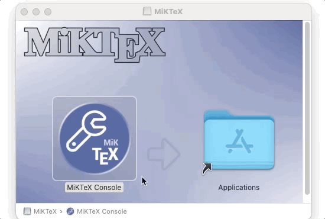
1 Instalação
Nesta seção, abordaremos como instalar o R e o RStudio no Linux e no Windows. Também discutiremos sobre a instalação de pacotes no R.
1.1 Instalação do R
A instalação padrão do R é feita a partir do CRAN, uma rede de servidores espalhada pelo mundo que armazena versões idênticas e atualizadas de códigos e documentações para o R.
Sempre que for instalar algo do CRAN, utilize o servidor (mirror) mais próximo de você.
1.1.1 No Windows
Para instalar o R no Windows, siga os seguintes passos:
Acesse o CRAN: https://www.r-project.org/
No menu à esquerda, encontre a opção Download e clique em CRAN.
Escolha a opção de servidor (mirror) mais próxima de você.
Clique em Download R for Windows.
Clique na opção base.
Na nova página, clique em Download R x.x.x for Windows, sendo x.x.x o número da versão que será baixada. Se você teve algum problema com o download, tente escolher outro servidor no passo 3.
Feito o download, clique duas vezes no arquivo baixado e siga as instruções para instalação.
Na etapa de escolher a pasta de destino da instalação, se você escolher um local que não esteja dentro da sua pasta de usuário, você precisará de acesso de administrador. Se escolher uma pasta dentro da sua pasta de usuário, não precisará.
1.1.2 No Linux
Como a instalação no Linux depende da distribuição utilizada e, em geral, pessoas que utilizam Linux são mais experientes, vamos informar apenas as coordenadas até as instruções/arquivos. Se você tiver alguma dificuldade durante o processo, por favor envie a sua dúvida para a nossa comunidade. Faremos o possível para ajudar.
Acesse o CRAN: https://cran.r-project.org/
No menu à esquerda, encontre a opção Download e clique em CRAN.
Escolha a opção de servidor (mirror) mais próxima de você.
Clique em Download R for Linux.
Clique no link referente à distribuição que você utiliza.
Siga as instruções contidas na página para instalar o R. Se você teve algum problema com o download, tente escolher outro servidor no passo 3.
1.1.3 No MacOS
Para instalar o R no MacOS, siga os seguintes passos:
Acesse o CRAN: https://www.r-project.org/
No menu à esquerda, encontre a opção Download e clique em CRAN.
Escolha a opção de servidor (mirror) mais próxima de você.
Na nova página, clique em Download R for (Mac) OS X.
Clique na versão do R que você quer baixar (geralmente queremos baixar a mais recente). O objetivo aqui é baixar um arquivo do tipo “R-x.x.x.pkg”, sendo x.x.x o número da versão que vamos instalar. Se você teve algum problema com o download, tente escolher outro servidor no passo 3.
Feito o download, clique duas vezes no arquivo baixado e siga as instruções para instalação.
1.2 Instalação do RStudio
Agora vamos instalar a versão open source do RStudio, a IDE que utilizaremos para escrever e executar códigos em R.
Para instalar o RStudio no Windows, siga os seguintes passos:
- Acesse a página de downloads da RStudio: https://rstudio.com/products/rstudio/download/#download
Se você tiver acesso de administrador, baixe a versão referente ao seu sistema operacional que está na lista de All Installers.
Se você não tiver acesso de administrador, baixe a versão referente ao seu sistema operacional que está na lista de Zip/Tarballs.
Instalando se você tiver acesso de administrador
- Clique duas vezes no arquivo que você baixou da página do RStudio e siga as instruções de instalação.
Instalação se você não tiver acesso de administrador
Descompacte o arquivo baixado no passo anterior. Geralmente isso pode ser feito clicando no arquivo compactado com o botão direito do mouse e clicando na opção descompactar ou extrair.
Após a descompactação ter sido finalizada, você terá uma pasta chamada:
RStudio-x.x.x, em que x.x.x é o número da versão baixada. Abra essa pasta e entre na subpasta com nomebin.Procure pelo arquivo chamado
rstudioe clique duas vezes. Isso abrirá o RStudio. Recomendamos fixar o programa na barra de tarefas para não precisar repetir essa etapa sempre que for abrir o programa.
Observação: se você excluir a pasta que extraímos, o RStudio irá parar de funcionar.
1.3 Instalação de softwares adicionais
Os softwares descritos anteriormente são suficientes para realizar as tarefas básicas em R. Porém, principalmente quando tratamos de relatórios com R, alguns softwares adicionais podem ser necessários em casos específicos! A seguir citamos alguns destes softwares, em quais casos eles são necessários e/ou úteis, e instruções sobre como instalá-los.
1.3.1 LaTeX
O LaTeX é um software para renderização de documentos PDF e também uma linguagem de programação. É bastante usada na academia para produção de artigos científicos.
No R, o LaTeX aparece quando queremos gerar relatórios e apresentações em PDF, a partir de um documento RMarkdown. Na prática, o RMarkdown é transformado para LaTeX através do software Pandoc1, que por sua vez é processado para gerar o PDF. Portanto, para gerar um relatório em PDF através do RMarkdown, precisamos ter alguma ferramenta de LaTeX instalada.
A recomendação das pessoas que desenvolvem o RMarkdown é a utilização do tinytex, uma distribuição leve do LaTeX.
install.packages('tinytex')
tinytex::install_tinytex() # instalar o TinyTeXCaso você encontre algum problema para instalar o TinyTex, também é possível instalar outros editores de LaTex. A seguir estão apresentadas algumas opções!
1.3.1.1 No Windows
Uma distribuição de LaTeX que apresenta versão para Windows é o MiKTeX.
Para instalá-lo, primeiramente faça o download do arquivo
.exeatravés deste link, escolhendo a versão de instalação para Windows.Abra o arquivo baixado. Uma janela irá abrir, e a primeira etapa de instalação é a “Copying Conditions”. Nesta etapa você deve selecionar a opção “I accept the MiKTeX copying conditions” e clicar em “Avançar”.
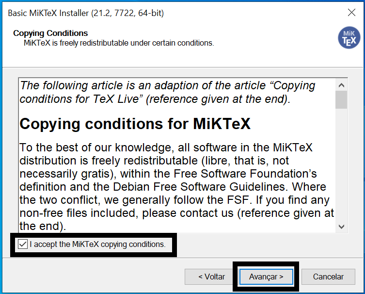
- A próxima etapa da instalação, chamada de “Installation Scope”, você deve escolher em qual usuário o software deve ser instalado. Selecione a primeira opção (“Install MiKTeX only for me.”) para que o MiKTeX seja instalado apenas no seu usuário atual no computador. Essa é a opção recomendada. Então clique em ”Avançar”.
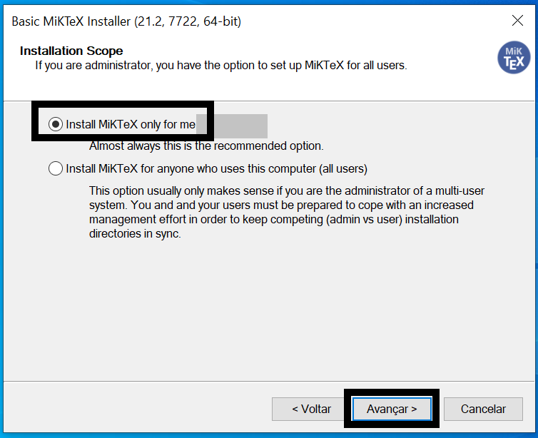
- Na etapa “Installation Directory”, escolha o diretório em que o MiKTeX será instalado. Caso tenha dúvidas sobre isso, não altere nada e utilize o caminho padrão de instalação. Então clique em “Avançar”.
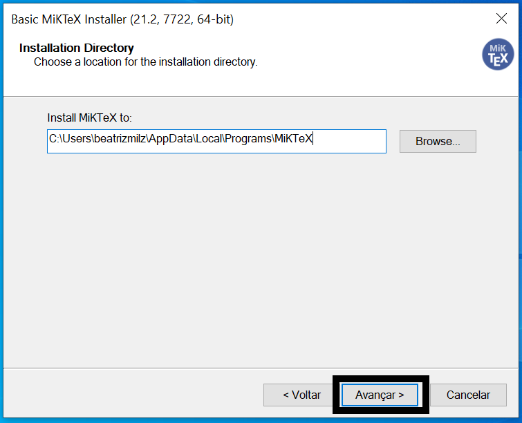
- Na etapa “Settings”, utilize as configurações padrão e clique em “Avançar”.
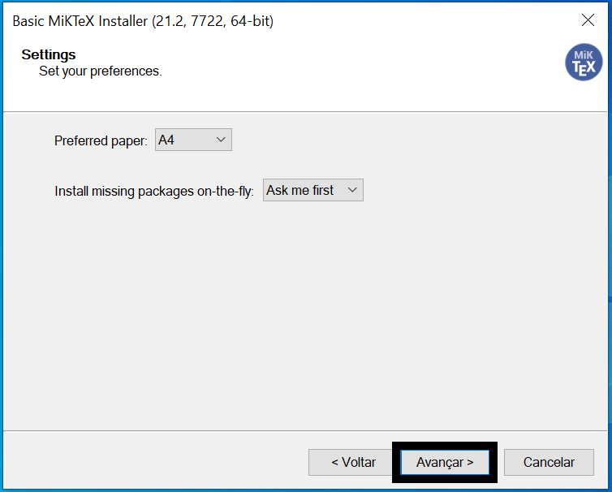
- Na etapa “Review”, são apresentadas as configurações escolhidas anteriormente. Clique em Start para que a instalação seja começada.
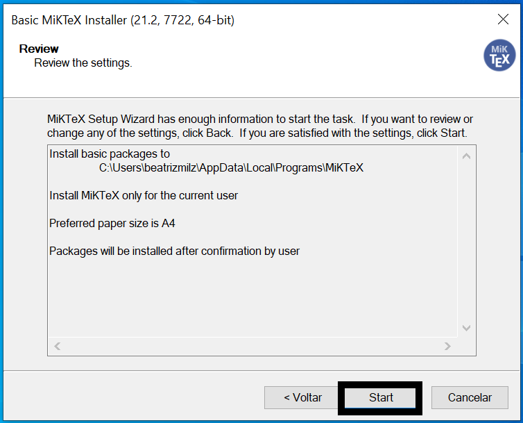
- O processo de instalação será realizado, e pode demorar alguns minutos. Duas barras verdes aparecerão para demonstrar a porcentagem da instalação já realizada. Quando essa etapa terminar, as barras ficarão cinzas e o você deverá clicar no botão Start.
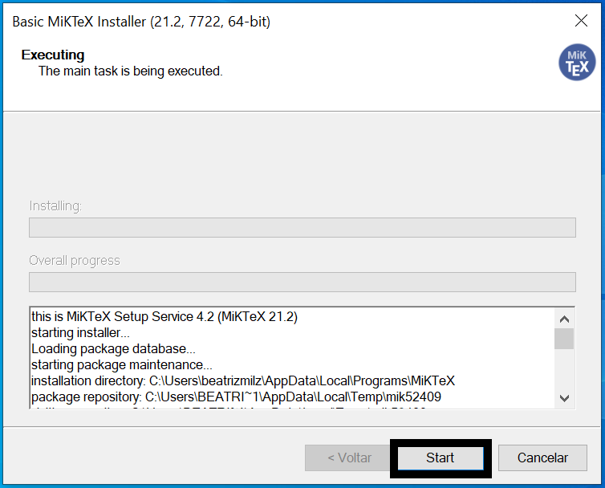
- Na etapa “Update Check”, aparecerá a opção de buscar por atualizações. Mantenha o botão “Check for updates now” selecionado, e clique no botão Start.
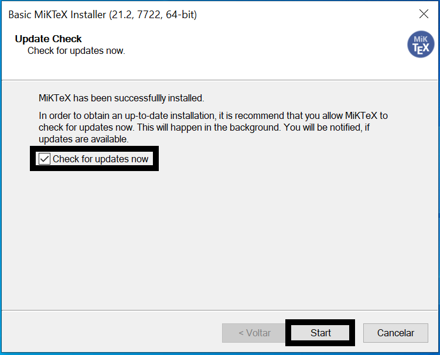
- A próxima janela mostrará uma mensagem dizendo que a instalação foi completa. Clique no botão Close para fechar essa janela.
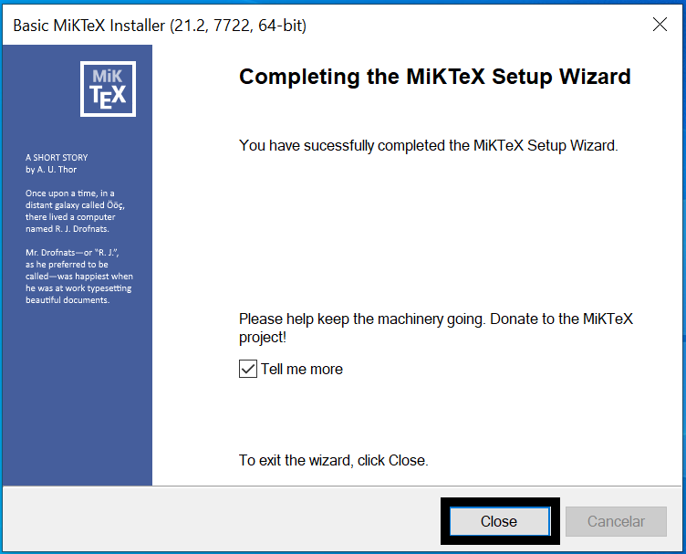
10. Abra o MiKTeX console através do menu Iniciar do Windows. No menu lateral, escolha a opção “Updates”. Clique em “Check for updates”, e o MiKTeX buscará informações sobre as possíveis atualizações necessárias. Então clique em “Update now”, para que as atualizações sejam baixadas e instaladas. Essa etapa também pode demorar um pouco!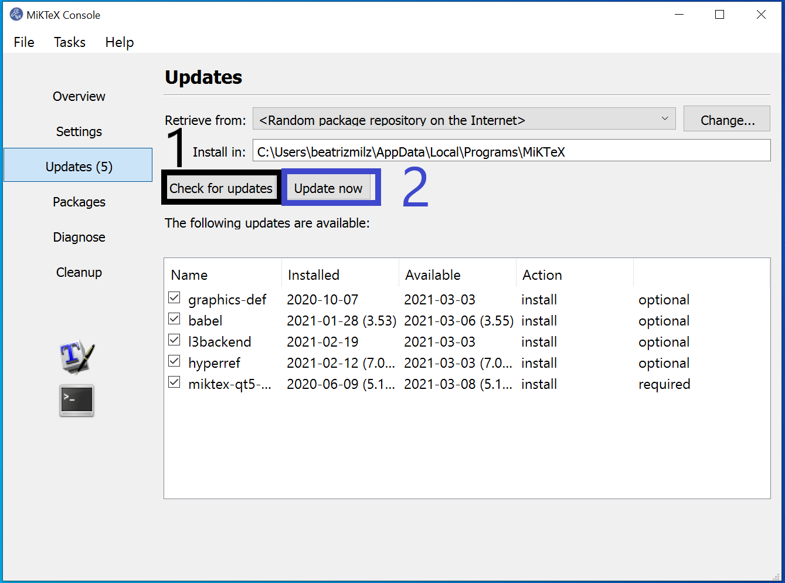
- Após instalar as atualizações, o MiKTeX avisará que ele precisa ser fechado. Abra-o novamente. Após este processo, o MiKTex estará pronto para uso.
1.3.1.2 No Linux
No linux, a forma mais direta de garantir que temos o LaTeX na máquina com todas as dependências é instalando o texlive-full. No Ubuntu, basta rodar
sudo apt install texlive-fullImportante: o texlive-full é uma forma “bruta” de instalar tudo do LaTeX, e pode ocupar mais do que 5GB do seu disco! Então tome cuidado e procure alternativas, como as descritas neste site.
1.3.1.3 No MacOS
Uma distribuição de LaTeX que apresenta versão para MacOS é o MikTex. Para instalá-lo, primeiramente faça o download do arquivo .dmg através deste link. Este tutorial apresenta todos os passos de instalação no MacOS, porém abaixo também vamos descrever os passos:
Faça o download do arquivo
.dmgatravés deste link, escolhendo a versão de instalação para MacOS.Abra o arquivo baixado. Uma janela irá abrir, e você deve arrastar o ícone “MiKTeX Console” para a pasta “Applications”.
No Launchpad (menu de arquivos instalados), procure o ícone do “MiKTeX Console” e abra-o. Você também pode usar a pesquisa do MacOS (utilizando o atalho Command + Barra de espaço), pesquisando por MiKTeX para abrir o software.
Ao abrir pela primeira vez, o MiKTeX solicitará que você selecione uma opção para que a instalação seja completada. Selecione “Finish private setup”, e isso fará com que o MiKTeX esteja disponível apenas no seu usuário do computador. Após selecionar essa opcão, ele terminará a configuração, e aparecerá uma mensagem dizendo que o MiKTex será reiniciado. Espere até que ele reinicie. Ao final, aparecerá uma mensagem dizendo que é necessário fazer atualizações no MiKTeX.
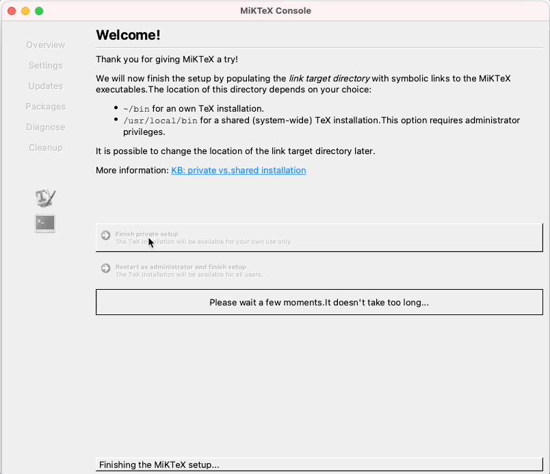
- No menu lateral, escolha a opção “Updates”. Clique em “Check for updates”, e o MiKTex buscará informações sobre as possíveis atualizações necessárias. Então clique em “Update now”, para que as atualizações sejam baixadas e instaladas.
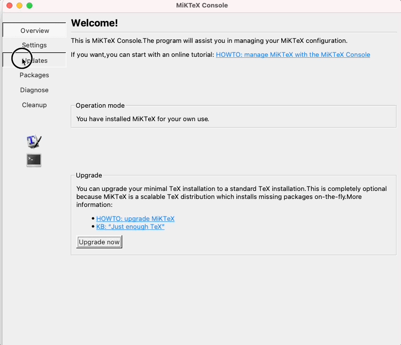
- Após instalar e atualizar, o MiKTeX está pronto para uso!
1.3.2 Office
No R, os arquivos do pacote office também são gerados a partir do Pandoc. Por isso, não é necessário instalar nenhum software adicional para gerar os documentos.
No entanto, para abrir documentos do Office, como .pptx e .docx, é necessário ter o Office ou alguma alternativa aberta instalados.
Além disso, por conta das particularidades desses tipos de documentos, muitas vezes é necessário instalar pacotes adicionais, que não vêm com o {rmarkdown}. Abaixo, segue uma lista de pacotes usualmente utilizados nesse contexto:
{officedown}.{officer}, que é uma dependência do{officedown}.{flextable}, para geração de tabelas.{svglite}, para renderizar gráficos em SVG.
Uma dica adicional: É possível gerar gráficos editáveis nos documentos Office! Dessa forma, você pode gerar o relatório bruto e depois editar manualmente. Para isso, siga o tutorial deste vídeo do YouTube. Referência: link.
1.3.2.1 No Windows
O LibreOffice pode ser instalado através deste link, escolhendo o sistema operacional “Windows” e clicando em “Baixar” e executando o arquivo baixado.
1.3.2.2 No Linux
No linux, a forma mais fácil de abrir documentos provenientes do Office é utilizando o LibreOffice:
sudo apt install libreofficeO LibreOffice possui algumas limitações quando comparado ao software da Microsoft. Por exemplo, as tabelas que saem bonitas no Office podem ficar desformatadas no LibreOffice.
o LibreOffice 7.2 não está ainda no aptitude. Se quiser instalar essa versão, é possível baixar o arquivo
.debno site da ferramenta.
1.3.2.3 No MacOS
O sistema operaciona MacOS disponibiliza o iWork, que é composto pelas ferramentas Numbers, Pages e Keynote. Esses programas possibilitam abrir arquivos provenientes do Office.
Outra opção é a utilização do LibreOffice.
Primeiro, faça o download do arquivo
.dmgde instalação, através deste link, escolhendo o sistema operacional “MacOS” e clicando em “Baixar”.Após baixar o arquivo, abra-o. Uma janela irá abrir (como na imagem a seguir). Você deve arrastar o ícone “LibreOffice” para a pasta “Applications”.
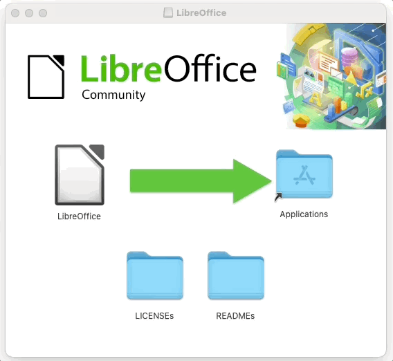
- O LibreOffice será instalado e você poderá utilizá-lo abrindo através do Launchpad (menu de arquivos instalados), ou também utilizando a pesquisa do Mac (utilizando o atalho Command + Barra de espaço), pesquisando por LibreOffice para abrir o software.
1.3.3 Pagedown e Chrome
O {pagedown} é uma alternativa recente para produzir arquivos em HTML utilizando o paged.js, uma biblioteca em JavaScript que torna um arquivo HTML muito parecido com um PDF. Com a ajuda do Chrome, é possível, inclusive, exportar o arquivo para PDF.
O {pagedown}, portanto, apresenta o melhor de dois mundos: a praticidade da extensão HTML e a portabilidade de arquivos PDF. Dessa forma, é possível gerar documentos PDF com formatos agradáveis sem depender do LaTeX.
No entanto, para gerar documentos PDF, é preciso utilizar um navegador. O navegador recomendado pelo {pagedown} é o Chrome, tanto que o pacote já vem com a função pagedown::chrome_print(), que pode ser utilizada para transformar um arquivo HTML ou RMarkdown em PDF.
Se você já tiver o Chrome instalado na sua máquina, provavelmente tudo funcionará sem problemas. Se não tiver e não quiser instalar, é possível instalar somente o headless Chrome.
No linux, uma alternativa é instalar o projeto Chromium, que é quase que totalmente open source.
1.3.4 Renderizando HTML widgets
Os HTML widgets são formas de ligar bibliotecas do JavaScript com pacotes do R. Isso permite gerar relatórios dinâmicos em HTML diretamente do R. O pacote {htmlwidgets} possui um conjunto de melhores práticas para criação dessas soluções.
No entanto, é comum utilizar HTML widgets em relatórios estáticos. Para isso, o R precisa de uma estratégia para tirar fotos estáticas dos widgets. Isso é realizado através do pacote {webshot}.
Você pode instalar o {webshot} executando o código abaixo:
install.packages("webshot")Para que o {webshot} funcione, no entanto, também é necessário ter o PhantomJS instalado na máquina. O PhantomJS é basicamente um navegador que roda totalmente no plano de fundo, possibilitando a captura de tela.
Para instalar o PhantomJS, execute o código abaixo:
webshot::install_phantomjs()1.3.5 Blogdown
Para criar blogs utilizando o pacote {blogdown}, também é necessário instalar o Hugo, programa que renderiza sites estáticos.
Felizmente, essa tarefa é bem tranquila pois o {blogdown} já vem com um helper para isso. Basta executar o código abaixo e reiniciar a sua sessão do R para que o Hugo seja instalado:
blogdown::install_hugo()1.3.6 Ferramentas de desenvolvimento
Em algumas situações (como por exemplo, no desenvolvimento de pacotes), é solicitada a instalação de ferramentas de desenvolvimento. Essas ferramentas dependem do sistema operacional utilizado.
No caso do desenvolvimento de pacotes, você pode verificar se já possui as ferramentas de desenvolvimento instaladas usando a seguinte função: devtools::has_devel(). Caso a mensagem retornada seja “Your system is ready to build packages!”, significa que você já tem as ferramentas necessárias instaladas.
devtools::has_devel()
#> Your system is ready to build packages!1.3.6.1 No Windows - Rtools
O software Rtools é apenas necessário para computadores que utilizem o sistema operacional Windows. Para instalá-lo, clique neste link e faça o download do arquivo instalador referente à sua versão do Windows (32 ou 64 bits). Abra o arquivo baixado para realizar a instalação.
1.3.6.2 No Linux - r-base-dev
No Linux, caso seja necessário, você também pode instalar o pacote r-base-dev. Por exemplo, no Ubuntu você pode instalá-lo executando o seguinte código no terminal:
sudo apt install r-base-dev1.3.6.3 No MacOS - Xcode command line tools
O Xcode command line tools é uma ferramenta de desenvolvimento oficial da Apple. Para instalar essa ferramenta, primeiramente é preciso acessar o Terminal. Você pode encontrar o Terminal procurando na lista de programas instalados (Launchpad), ou então na opção de busca (usando o atalho: command + barra de espaço) e escrevendo Terminal.
No terminal, escreva o seguinte código e aperte Enter, o que iniciará a instalação:
xcode-select --installSiga as instruções apresentadas para instalar.
Caso a seguinte mensagem apareça, significa que você já tem a ferramenta instalada: error: command line tools are already installed, use "Software Update" to install updates.
Caso queira confirmar que a instalação foi bem sucedida, execute no terminal o código a seguir. Caso a mensagem de retorno seja um caminho (por exemplo: /Library/Developer/CommandLineTools), significa que a instalação foi bem sucedida, e esse é o caminho onde a ferramenta foi instalada.
xcode-select -p1.3.7 Git
O Git é um programa para linha de comando que possibilita realizar o controle de versões dos arquivos em um diretório (ou seja, em uma pasta). Para instalar esse sistema de controle de versões distribuído, acesse a página sobre Download do Git, escolha o seu sistema operacional, siga as instruções apresentadas para instalação.
O Pandoc já vem dentro do próprio RStudio, então não é necessário instalar este software.↩︎